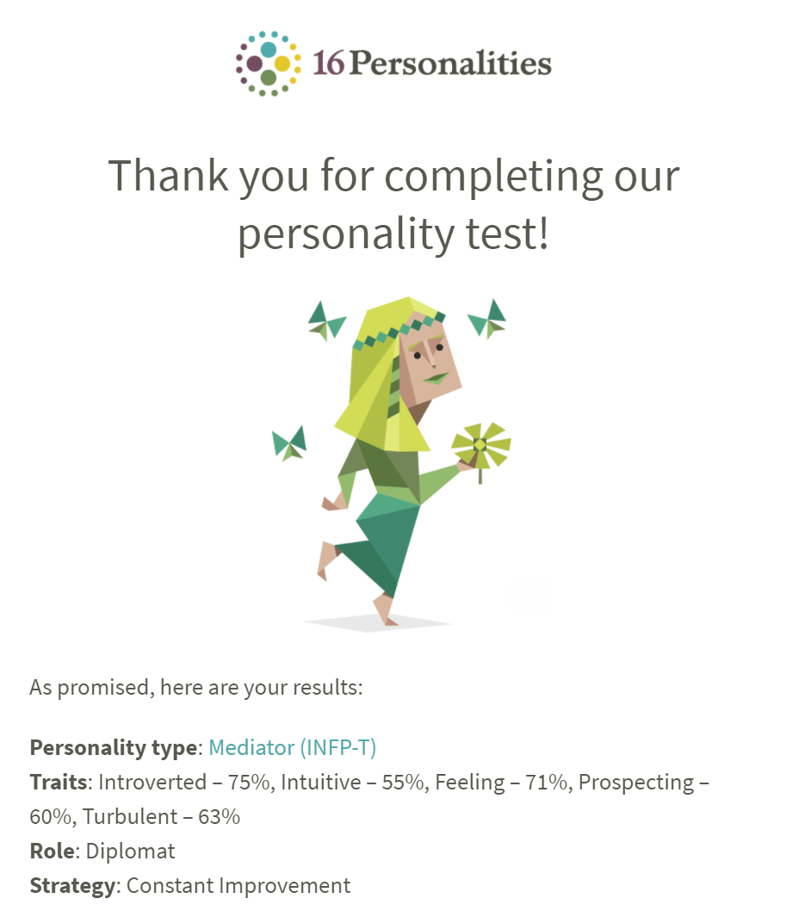

The results of these tests were eerily accurate for the most part; especially the Myers-Briggs test. Being labelled the Mediator really resonated with me, especially with being introverted. I’ve always been a shy person, so this result was definitely expected. The Myers-Briggs profile also goes deeply into how I am a massive empath, and how that helps me build connections. I liked reading about how we can use our insights and perspectives to help us understand others, especially if they are in need of some help.
I think that being a Mediator will help team scenarios as I won’t have this ironclad way that things must be done, but more so want people to work together the best that they can, because forcing people into a set way to do things can backfire if it’s not the way that they do their best work. Keeping all of these results in mind, the best way to tackle group work is going to be pushing myself outside of my boundaries and trying my best to be more social.
